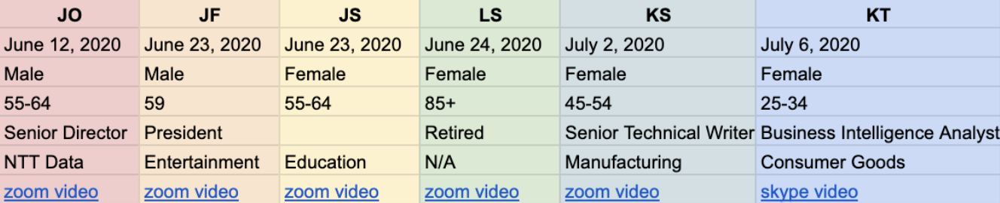
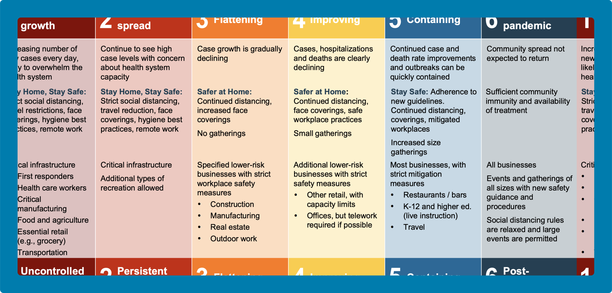
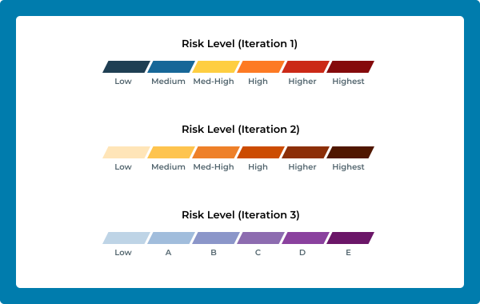
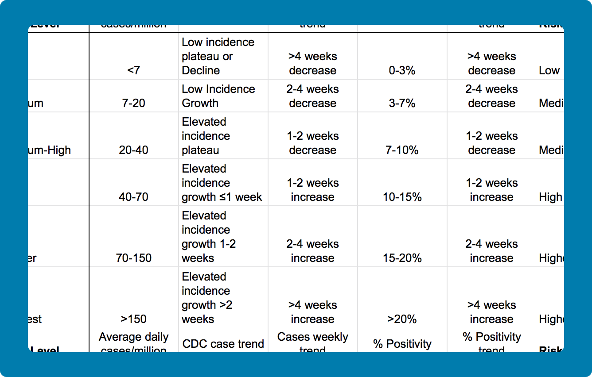

Improving the reference center website for the library of a mid-sized educational associated based in Washington D.C.

Live dashboard screenshot as of October 21, 2020
Timeline:
8 weeks, Feb 2020 - Apr 2020
Roles:
Project Manager, Lead Designer
Tools:
Figma, Optimal Workshop,
UX Team:
James Benjey, Nupur Bindal, Alex Fidel, Gabriella Gazdecki, Rhea Kulkarni, Mustafa Naseem, Cleo Pontone, Michael Rigney, Dominique Roitman, Tess Mendes, Sophia Timko, William Zhang
I am currently co-designing with Cassie Eddy and pursuing an independent study under Mustafa Naseem.
The State of Michigan needs a data-backed resource to decide whether to initiate statewide re-opening procedures or reinstate shut-down procedures amidst the COVID-19 pandemic.
The dashboard tracks COVID-19's public
health indicators for Michigan. The two primary indicators displayed on the dashboard are
Epidemic Spread and Public Health Capacity.
There are 2 versions of the dashboard serving 2 audiences:

Because the State needed the dashboard as soon as possible due to the quickly flaring pandemic, there was no time to deeply explore the problem space. We gathered requirements with the Michigan Department of Health and Human Services (MDHHS). Our team prioritized the private dashboard and quickly designed initial versions of the private dashboard shown below.

After finishing initial prototypes, our team initiated internal heuristic evaluations to quickly diagnose and prioritize usability problems on future iterations. We focused on the following Nielsen's heuristics:
Once our team understood what usability issues could affect users, we devised recommendations that addressed the issues without detracting public health functions and needs. Many of these recommendations such as implementing an FAQ section and following accessibility guidelines served as a strong foundation for the rest of our design process.
Once our development team finished a closed-beta version of
the
private dashboard, we set off to perform remote user-tests and interviews to continue gathering the needs of
public
health workers and government employees.
After interviewing and testing the dashboard with county and state public-health professionals, as well as UMSPH students, we discovered the following needs:
Roughly 2 months after the launch of the public dashboard, we needed to ensure that general public users could also easily use the dashboard to gather and understand the data they needed.
 This time, we
initiated empathy interviews that focused on the lifestyle impact of COVID-19, feelings and desired data
towards reopening,
as
well as small business strategies and interventions regarding reopening. Our public usability test involved
simpler tasks compared to the private dashboard test.
After testing the dashboard with the the general public, we discovered the following issues:
After interviewing the general public, we learned about the following attitudes towards reopening and the pandemic crisis:
After the September monochromatic color scheme update, we
needed to ensure
that general public users could continue using other parts of the dashboard with ease. At this point in time,
I was one of two designers left on the team. The lack of resources and time did not allow for deep and
thorough research. Instead, I conducted a cognitive walkthrough, putting myself in the shoes of
a general public user and completing a typical task.
The goal of my cognitive walkthrough was to
discover functional
issues not addressed in previous iterations which prioritized platform features over dashboard usability.
Find out the current state of COVID-19 for the city of Ann Arbor, which is located in Washtenaw County.
After watching myself complete the task while thinking out loud, I summarized and ranked the problems I experienced and brainstormed solutions to handoff to our developer.
One of the most challenging and aspects of the dashboard's design was the color scheme. This was constantly a point of discussion because we wanted to ensure the dashboard adhered to accessibility standards. However, due to state demands, we had to adopt a color scheme that strictly abided by Governor Whitmer's reopening plan phase colors. This was our first iteration and it was on the live dashboard for many months.
However, this would constantly cause confusion among the general public. Users mentioned that set risk-indicator colors (government assessment of current risk level at the selected date and region) lining up with the governor's reopening phase colors was misleading and problematic.
To address the confusion caused by the reopening phase color scheme, we decided to move towards a monochromatic color scheme.
The point of discussion was to design a color scheme that
accurately portrayed and communicated the logical, emotional, and behavioral impact of a certain risk level.
Our primary stakeholder from MDHHS mentioned that among the public health community, the second iteration
communicated
too much danger because of its red
tones. The second iteration was never released onto the live dashboard.
Eventually, I settled down on a cooler color scheme that used our new risk level indicator legend, replacing
Medium, Medium-High, High, Higher, and Highest with A, B, C, D, E, and F respectively. The third iteration is
currently live on the dashboard, and has
cleared confusion related to the Governor's reopening plan colors.
Additional public health needs for the private dashboard called for distinct icons that matched CDC case trends. The challenge with CDC case-trends and their iconography existed because trends that involved highly specialized language and complex epidemiological meaning had to be broken down into simple and easily identifiable icons that also each corresponded with a unique risk level.
In addition, public health stakeholders also needed specific icons for low-falling trends (scenarios in which COVID-19 is under-control or becoming under-control):
This brought us to a grand total of 9 case-trends/distinct icons. Since there were only 6 risk-levels to map with the 9 case-trends, I worked hard to manage expectations with public health stakeholders. Not only was I able to consolidate certain CDC case-trends, but also group every low-falling trend under the "Low" risk-level.
Excited to contribute towards such an important dashboard, I
quickly became lost in the public health terminology, software requirements, and extremely fast-paced agile
interactions that I had never experienced before. I realized working on
the team
required continuous, iterative, but patient efforts to make meaningful contributions.
Asking key questions and learning from more experienced faculty and graduate students allowed me to grow as
they mentored me and shared proper design and research practices.
At the end of the day as designers, I helped desig the dashboard
to
stay true to public health needs. Often times, public health experts expressed opinions that
differed from our initial design decisions.
Rather than viewing these differences as roadblocks in our
design process, I perceived the feedback as expert advice and a unique perspective to improve the dashboard.
Having regular conversations through daily stand-ups, weekly meetings, and slack messages allowed me to
collaborate and stay on the same page.
Advocating for dashboard users by defending designs was the
most crucial takeaway from this project. Throughout this entire design process, our design team regularly
interacted with users and sought out concrete
data to justify design decisions.
Constantly giving users a voice at the table and synthesizing their feedback
into robust and accessible designs is not only a philosophy that our team followed, but a
mindset that I have forever adopted as a designer.
Below are published articles regarding the dashboard and our team's work. Click here to view the live dashboard.